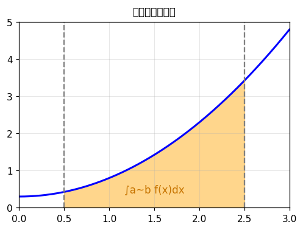
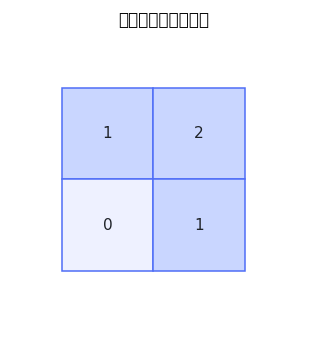
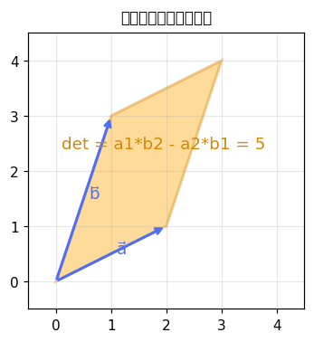
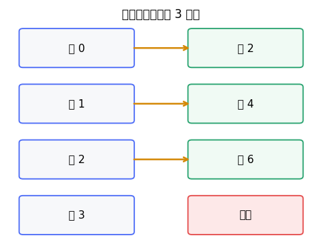
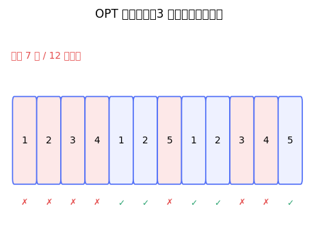

from typing import List
class Solution:
def resultArray(self, nums: List[int], k: int, queries: List[List[int]]) -> List[int]:
n = len(nums)
identity = 1 % k
def merge(left, right):
lp, lc = left
rp, rc = right
cnt = lc[:]
for r, amount in enumerate(rc):
cnt[(lp * r) % k] += amount
return ((lp * rp) % k, cnt)
def leaf(value):
residue = value % k
cnt = [0] * k
cnt[residue] = 1
return (residue, cnt)
empty = (identity, [0] * k)
size = 1
while size < n:
size <<= 1
tree = [empty] * (2 * size)
for i, value in enumerate(nums):
tree[size + i] = leaf(value)
for i in range(size - 1, 0, -1):
tree[i] = merge(tree[i << 1], tree[i << 1 | 1])
def update(pos, value):
p = size + pos
tree[p] = leaf(value)
p >>= 1
while p:
tree[p] = merge(tree[p << 1], tree[p << 1 | 1])
p >>= 1
def query(left, right):
left_acc = empty
right_acc = empty
l, r = left + size, right + size
while l < r:
if l & 1:
left_acc = merge(left_acc, tree[l])
l += 1
if r & 1:
r -= 1
right_acc = merge(tree[r], right_acc)
l >>= 1
r >>= 1
return merge(left_acc, right_acc)
answer = []
for index, value, start, x in queries:
update(index, value)
answer.append(query(start, n)[1][x])
return answer
🚀 去 LeetCode 做题 →




